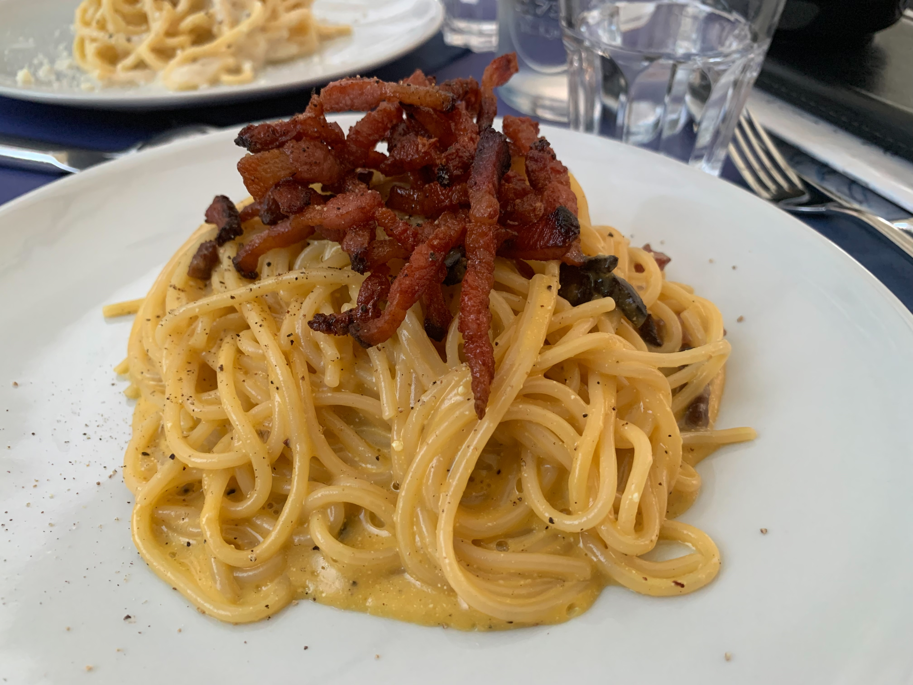

Home
Italian Carbonara

Ingredients:
- Real Italian pasta. (Important for the emulsification), 100g per person
- Guanciale, 50g per person
- Pecorino Romano 25g per person
- Egg Yolk, 1 per person
- Whole Egg, 1
- Empty mug to store pasta water
- Black Pepper
Steps:
Prep Ingredients:
- Cut Guanciale into thin strips, with meat in middle and fat atop.
- Grate the Pecorino Romano as small as you can
- Seperate yolk(s) from whites and put into bowl. (Do with whites as you will)
- Add the 1 whole egg into bowl.
- Add generous amount of Black Pepper
- Beat with fork
- Start gradually mixing in the Pecorino and set aside
Cooking the meal:
- Put the Guanciale into a cold pan and put heat to medium-low and slowly render out the fat.
- Once the Guanciale is cooked, put aside leaving the rendered fat in the pan.
- Cook your pasta, just before finishing remove at least one mug full of pasta water.
- Place the Pasta into the pan and mix until the pasta absorbs all the oil (make sure you reheated pan slightly before this).
- Add a small amount of guanciale to the pasta.
- Pour a tiny amount of pasta water, just to cover the bottom into the pan.
- Bring the water you cooked the pasta back to a boil and place the pan with pasta atop of it.
- Add your egg mix and immediately start stirring.
- Add pasta water depending on whether or not you can toss the pasta in the pan.
- Plate and serve immediately with the rest of the Guanciale ontop, some more grated Pecorino and another drizzle of black pepper.